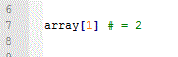
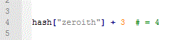

Blog Entry Week 4: Ruby
Arrays and Hashes
March 4, 2016
This week was an introduction to Ruby. Ruby was developed as a language that is symantical and designed to simiplify the programming interface. It is an Object Oriented Progamming language and while we didn't delve too deaply in to objects so far, are working with how to capture variables and reference them through out the program. Two of these that are used are arrays and hashes.
Arrays
So what is an array? Well arrays are ordered collections of objects such as strings, integers, and floats. Arrays are created using the following array = [ 1, 2, 3 ]. This can then be called later in the program. For instance lets say you want to use the second value in the array how would you get it? Well you would get it like this:
Hmm.. why does calling position 1 give the second value? Well arrays start from 0 of course! Yeah that's going to take a little getting used to, but it seems to me that it could be useful if you were counting down since typically you would count down to 0... Blast off!
Arrays have built in methods that can perform useful tasks. .each for instance can iterate through the array one element at a time. You can add to the array by .push which adds information to the back end of the array the method is acting on. There are many other array methods that can be used as well so it is a good idea to look to the Ruby Docs to find what your looking for.
Hashes: Not just for breakfast!
What if I don't know what position position my data will be in how can I find the value I want? Well hashes can help with that. Hashes collect the vaules in key value pairs meaing instead of 1 being in the zeroith position in the array, you can make 1 be in the "zeroith" position! You would do this by creating a hash like this: hash = { "zeroith" => 1 }. Later in the code you would call it like this:
Hashes make information available in ways that can be useful. For instance if your key is something that relates to the value, you can accept user input to find relivent information. Such as a hash that links names to addresses, you can take user input, (a name) and return the address linked to that name. The only thing is that the keys have to be unique. A hash can not hold two keys with the same name.
Like arrays, hashes have methods associated with them as well. Hash methods that can also be found in the Ruby Docs.
Did you find any new uses for arrays and hashes. Send me a message below! Thanks for reading.